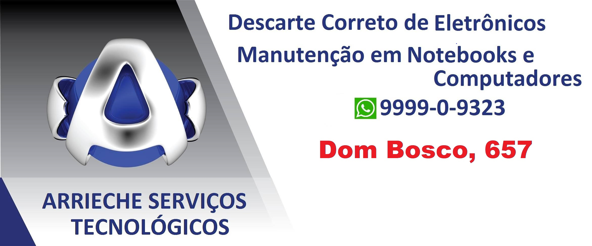

ONDE RECICLAR?
Locais para reciclar em Rio Grande
Para o lixo eletrônico, é necessário fazer seu descarte em pontos específicos, isso é, lugares especiais. Na cidade de Rio Grande, pontos diversos estão espalhados por toda a área urbana.
Além dos pontos fixos, você deve se manter atento a campanhas e movimentos sociais que buscam a coleta do lixo eletrônico, como foi o caso da FURG, onde durante o mês de Maio/Junho ficou no Centro de Convivências um enorme centro de arrecadação.
Reciclagem de eletronicos
Abaixo se encontra a localização correta do local para buscar descarter seu eletrônico sem uso, em Rio Grande, Essa recicladora faz campanhas de coleta de lixo pelo centro da cidade e no cassino para que as pessoas possam levar seus eletrônicos sem utilidade para que possam ser descartados de maneira correta.
Caso queira descobrir a melhor rota para chegar ao destino, basta-se pressionar o botar "VER ROTA", desse modo o Google Maps irá traçar a melhor rota dada sua localização.
Reciclagem Arrieche & Serviços Tecnológicos
A Reciclagem Arrieche & Serviços Tecnológicos trabalha, pelo facebook de forma voluntária sempre buscando a melhor forma de atender o cliente e proteger o meio ambiente.

Atualmente a Reciclagem Arrieche & Serviços Tecnológicos está localizada na posição abaixo, caso queira um contato mais direto com agência, deixaremos em seguida o link de uma página que redireciona para mais informações sobre a empresa, link:
Página do Facebook, CLIQUE AQUI!
Vantagens de Reciclar

A reciclagem é um ato de cidadania .
Reciclar não é só uma opção, é um dever do cidadão, além de contribuir pro seu próprio bem estar você colabora com todos os outros para fazer a sua cidade e o mundo um lugar melhor. Faça a sua parte.
Conservação do solo e da água. Reciclando, você pode preservar a sua saude . Os materiais do lixo eletrônico contaminam facilmente a água e o solo, e isso acaba voltando pra você no fim das contas, e isso evita muitas doenças, como o câncer.
Reutilização de Metais Preciosos. muitos dos componentes eletrônicos de computadores, celulares e até mesmo fios possuem partes de ouro, cobre ou prata. E dependendo da empresa, algumas até te pagam pela quantidade de lixo que você leva.